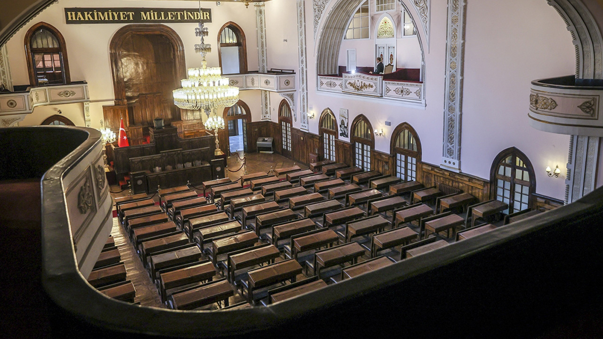
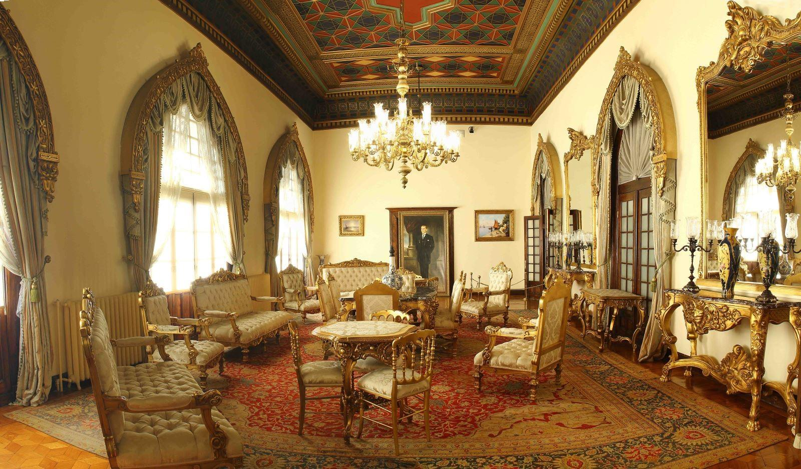

Cumhuriyet Müzesi (II. TBMM Binası)
II. TBMM Binası, 1924-1960 yılları arasında TBMM faaliyetlerinin gerçekleştirildiği bina. Ankara'nın Altındağ ilçesinin Ulus semtinde bulunmaktadır. 1923 yılında mimar Vedat Tek (1873-1942) tarafından Cumhuriyet Halk Fırkası mahfili (toplantı yeri) olarak tasarlanan ve inşa edilen bu bina işlevi değiştirilerek meclis olarak kullanılmıştır. Bodrum üzerine iki katlı olan bu yapının iç bölümleri, iki kat boyunca yükselen ortadaki meclis salonunun üç kenarına dizilmişlerdir. Girişten sonra enine uzanan, iki ucunda merdivenlerin yer aldığı geniş geçit, Selçuklu ve Osmanlı bezeme motiflerinin yer aldığı bir tavanla örtülmüştür. Benzer biçimde ele alınmış yerlerden birisi de büyük salondur. Yer yer localarla değerlendirilen bu salonun özellikle yıldız motiflerini içeren ahşap tavanı, sonradan düzenlenen taç kapı ve bazı noktalar dışında kemerler, saçaklar, yer yer çinilerin yer aldığı bölümler ile bu dönemin mimari özelliklerini yansıtmaktadır. I. Türkiye Büyük Millet Meclisi binasının yetersiz olması ve gelişen Cumhuriyet Türkiye'si meclisinin ihtiyaçlarını karşılayamaması nedeni ile bina bir takım değişiklikler geçirmiş, sonra da II. Türkiye Büyük Millet Meclisi olarak 18 Ekim 1924 tarihinde hizmete açılmıştır. II. Türkiye Büyük Millet Meclisi 1924-1960 yılları arasında Atatürk ilke ve inkılâplarının gerçekleştirildiği; Cumhuriyetimizin gelişmesi için çok önemli çağdaş kararların alındığı; çağdaş yasaların çıkarıldığı uluslararası alanda Türkiye'nin etkinliğini ve saygınlığını artıran antlaşmaların yapıldığı; çok partili sisteme geçişin sağlandığı önemli bir yapıdır.
Türk siyasi tarihinde önemli yeri olan II. Türkiye Büyük Millet Meclisi binası işlevini 27 Mayıs 1960 Askerî Darbesi'ne kadar 36 yıllık bir dönem boyunca sürdürmüştür. 1961 yılında yeniden açılan Meclisin yapımı tamamlanmış olan modern binasına taşınması üzerine bu bina Merkezi Antlaşma Teşkilatı'na (CENTO) tahsis edilmiştir. 1961-1979 yılları arasında CENTO Genel Merkezi olarak kullanılan bu bina CENTO'nun kaldırılması ile aynı yıl Kültür Bakanlığı'na devredilmiştir. Bu binanın ön kısmının Cumhuriyet Müzesi olarak düzenlenmesi, arka kısmının ise Eski Eserler ve Müzeler Genel Müdürlüğü'nün hizmet binası olarak kullanılması kararlaştırılmıştır. Müze kısmı onarım ve restorasyonlardan sonra düzenlenerek 30 Ekim 1981 tarihinde "Cumhuriyet Müzesi" olarak ziyarete açılmıştır. Bu düzeniyle 1985 yılına kadar hizmet vermiştir. Aynı yıl ziyarete kapatılarak, teşhir çalışmaları başlamıştır. Çalışmalar 1991 yılına kadar devam etmiş, Ocak 1992 yılında yeniden ziyarete açılmıştır. Ağustos 2001 tarihinde tekrar ziyarete kapatılan müze, restorasyon ve teşhir - tanzim çalışmalarından sonra 29 Ekim 2008 tarihinde ziyarete açılmıştır.
Müzede ilk üç Cumhurbaşkanı dönemini yansıtan olaylar, kendi sözleri, fotoğrafları, bazı özel eşyaları ile o dönemde mecliste alınan kararlar ve kanunlar sergilenmektedir.